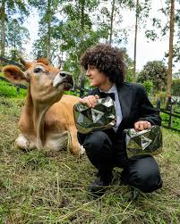
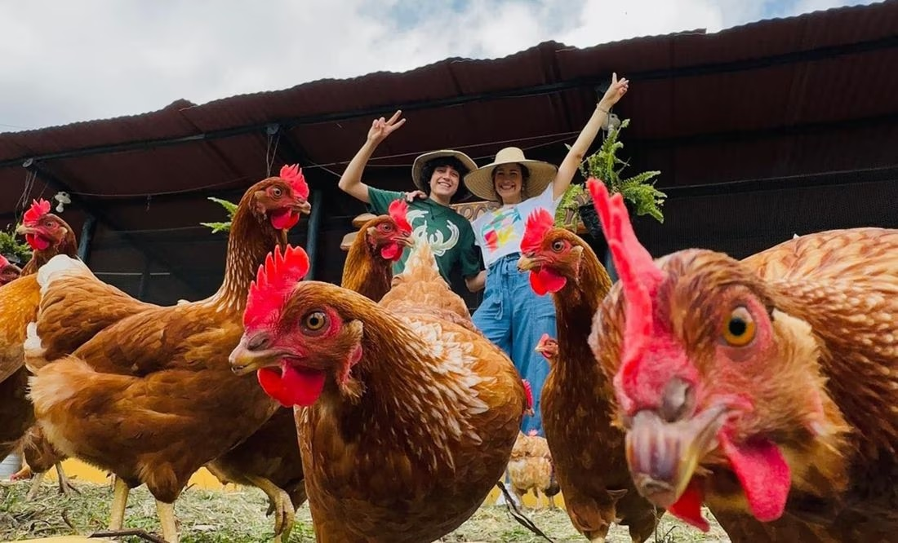
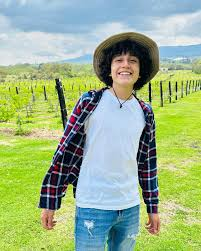
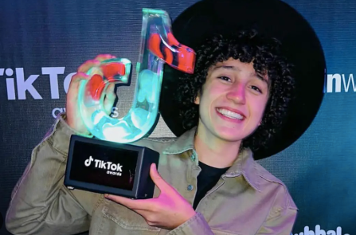
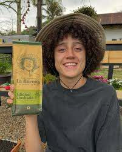

The Influencer

He is a famous young influencer from Colombia. His name is Carlos Alberto Díaz, better known as “El borrego”. He is 19 years old. He works on a farm and makes videos to teach about life on a farm.
Daily Routine

He always wakes up very early, at 5:00 a.m. First, he usually feeds his chickens and sheep. After that, he often cleans the farm.
Next, he sometimes cooks with his family. Then, they always eat lunch together. In the afternoon, he records new videos for social media.
At night, he usually checks the animals one last time, and reads comments on his social media. Finally, he goes to bed at 10:30 p.m.
The Farm

He lives in Cundinamarca with his parents. It is a quiet place without noisy neighbors. In this place the weather is usually sunny and fresh. He lives with his parents and they work together on the farm.
On his farm, there are many chickens, sheep, horses, and other animals. His house is between two big green trees. Near his house, there is a crystal-clear river, many fruit trees, and vegetable gardens.
Social Media

He records his videos all over the farm, for example, feeding his chickens and cows, collecting fruits and teaches people how to plant.
In the last days, his post talk about “La granja del Borrego”. He is sharing videos of the farm, the animals. Many young people like his content because it is fun and educational.
Projects

Currently, he is working on “Café La floresta”. He presented this project in shark tank colombia. The coffee is being sold in online stores.